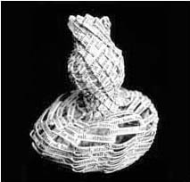

editor’s
notes &, How2/3
"Who is asking? Who is listening?"
We are "up to our ears" and "nose to the screen"--physical
beings, even in our metaphors...yet all of How2 is happening in outer
/electronic space and barely manageable technical code...miraculous, in
a certain way, but also ephemeral, barely apprehensible. What new questions
provoke us? Who is asking? Who is listening? Who is reading? Is the screen
too close and a monster, or something to transform and expand us as writers?
And closest to home--where life is physically earthbound in its non-stop
demands --is there reason enough to continue this project, with its imperious
daily work requirements?
How2/n3 celebrates the anniversary of a year on-line, but we are still uncertain as to how far we are reaching and just where and in what contexts this journal is being used? The impetus behind How2 came from the again perceived need for increased conversation among women poets and scholars--in particular, the need for more women writers to enter into the conversation/critique centered on innovative directions in poetry and cross-genre writing forms. Many of the excellent women-edited journals of the current crop have tended to circulate within discretely separate geographic, academic and special-interest circles, sometimes simply for lack of adequate distribution or intragroup networks...often as a self-elected rite of independence or dialogue of exclusivity.
We wanted--and want--to expand the community for both scholarly *and* informal paths of scrutiny for both current & modernist literatures made by women choosing the innovative path. Access to How2 is free for the browsing...we do not charge a subscription fee. But we need a lot more inter/activity to enlighten this project. To open up the view, we’ve invited Guest Editors for three sections of each issue: 1) "reading/s"--essays, talks presented in the reading/writing community, interviews, conference papers, re-prints & excerpts of significant scholarly work; 2) "new writing"--recent poetry, short prose forms, theatre experiment, cross-genre inventions, etc.; 3) "forum"--multiple participant discussions of "the question," as posed by guest editor/s of each issue. Contributors to this exchange are chosen by those editing it and are open to our readership.
The idea behind revolving guest editors is to keep the taste and under-standing of "innovation" circulating among a range of newcomers, as well as more seasoned participants, and to encourage an open field of continuous practical and theoretical speculation, including a redefinition of terms, so as to touch on--and share--a greater range of writing practices coming out of modernist and avant garde writing micro-communities.
Ideas for "work/book"--focused on a work-in-progress of one writer--may be proposed to Managing Editor, Jo Ann Wasserman, who coordinates this section. (See "work/book" in Table of Contents).
Shorter/less formal research "finds" and reading responses to works by modernist and contemporary women--are invited from any scholar, poet, student or non-categorized reader--via reportage, journal, letter exchange, fictive dialogue, etc.-- for the "alerts" section.
Our reader correspondence section--"postcard"--is posted, on-goingly, between formal issues, with a revolving exchange continually up-dated.
.
What we need from you:
. Pertinent information for our "update" section, re. conferences in-the-works and related "Call forPapers" postings. Writers and scholars regularly informed of such events by fact of their association with university or organized writing communities are requested, in particular, to keep us informed.
. Announcements of new journals and recent book publications, for "in'print" listings. If you are interested in having a particular book reviewed, please send a copy directly to : Jo Ann Wasserman, 33 Cole St., Apt # 3, SF,CA 94117. All info for "update" and "in-print" must go directly to this address: <twoswirl@aol.com>
We URGE you to invite other writing/teaching colleagues to respond to experimentalist and exploratory works. We are looking for INCREASING outside initiatives, in the voicing of this journal.
. Pithy quotes & suggestions for reprints of buried, barely read texts that are still exciting and important to think about. Original graphics and photographs, particularly--but not exclusively--when related to alphabets and words. Photos of proposed ideas may be sent to the Editor <kfraser@sfsu.edu> and, if selected, must be electronically scanned [easy to arrange at Kinko's, or with your institution's computer assistance] and sent by file to our webmaster Roberta Sims <rsims@bucknell.edu>. (NOTE: If you are scanning the artwork or photograph yourself, please scan at 300 dpi and save as a jpeg format with a ..jpg extension. -- R. Sims)
Guest editors for this issue are: Wendy Tronrud/ "forum"; Kim Lyons/ "new writing"; Linda Kinnahan and Elizabeth Frost, co-editors of "in-conference." For the willingness to add this work to their already impossible schedules--and the exciting evidence of mindfulness produced --we salute them!
Major kudos for this issue go--in particular--to Mg. Editor Jo Ann Wasserma and Webmaster at Bucknell, Roberta Sims. Without their tireless labors and good-natured ability to re-invent the wheel, none of this would come into fruition. Further thanks to Marti Stephens for assistance with proofreading and research. Bucknell University's Stadler Poetry Center and Library have provided us with extraordinary support for this project--both website and technical assistance--and we continue to be delighted with their generosity and vision.
Kathleen
Fraser
Editor/Publisher
HOW2
 Editor
/Publisher: Kathleen Fraser
Editor
/Publisher: Kathleen Fraser
 Managing
Editor: Jo Ann Wasserman
Managing
Editor: Jo Ann Wasserman
 Web
Designer: Roberta L. Sims
Web
Designer: Roberta L. Sims
Editorial Advisory Board:
Etel Adnan: Paris, Sausalito, Beirut/ Eileen O'Malley Callahan:
UC Berkeley/ Marina Camboni: Rome, Universita di Macerata/ Kornelia
Freitag: University of Potsdam/ Elisabeth Frost: NYC, Fordham
University/ Susan Gevirtz: San Francisco, Sonoma State University/
Eileen Gregory: University of Dallas/ Cynthia Hogue: Lewisburg
(PA), Bucknell University/ Linda Kinnahan: Pittsburgh, Duquesne
University/ Michele Leggott: University of Auckland (NZ)/ Nicole
Markotic: University of Calgary (BC)/ Hannah Moeckel-Rieke:
Free University of Berlin/ Marina Morbiducci: Rome/ Harryette
Mullen: UCLA, Los Angeles / Frances Presley: London/ Linda
Russo: SUNY Buffalo/ Mary Margaret Sloan: University of Chicago/
Cole Swensen: University of Denver/ Ann Vickery: Sydney
(AU), Macquarie University/ Momoko Watanabe: Tokyo Metropolitan
University
HOW2 Internet Address (Bookmark it!):
http://www.departments.bucknell.edu/stadler_center/how2
Editorial correspondence may be e-mailed to:
kfraser@sfsu.edu or twoswirl@aol.com
Review
copies of recent books may be sent to:
Jo Ann Wasserman
833 Cole St./apt. 3
San Francisco, CA 94117
The HOW(ever) Archive, at Rutgers
Rutgers' Scholarly Communication Center hosts the HOW(ever) archive on its web server at the address: http://www.scc.rutgers.edu/however. The HTML editions of the original print version, volumes I-VI, [May 1983-January 1992] are available. As issues of HOW2 are completed, they will be added to the archive.
Web Development, the HOW(ever) Archive at Rutgers:
Kathleen Crown, Miriam Bartha
Production Coordinators, Poetry in the Public Sphere
Delphine Khanna,Technical Consultant--SCC/CETH
Erin Griffith, Archive Production/Editing--SCC/CETH
Theresa Duhon, Proofreader, html translations
Gregory Murphy, Technical Consultant--SCC/CETH
Design, Stan Friedman
go to this issue's table of contents